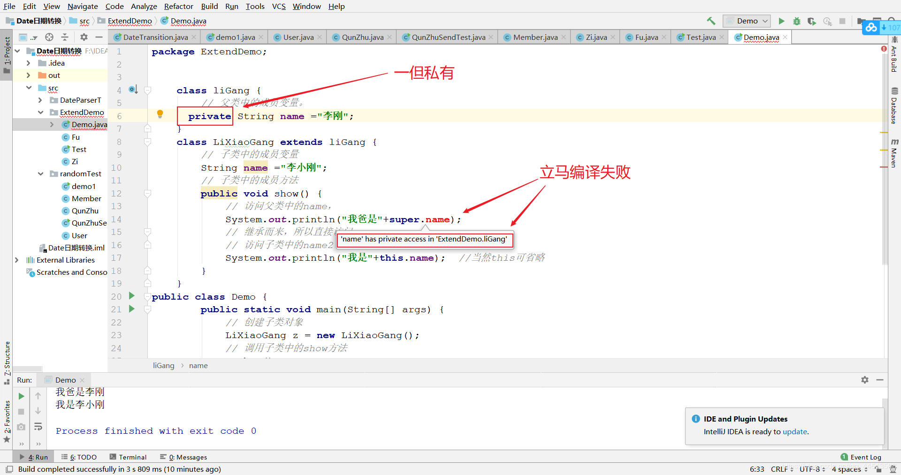
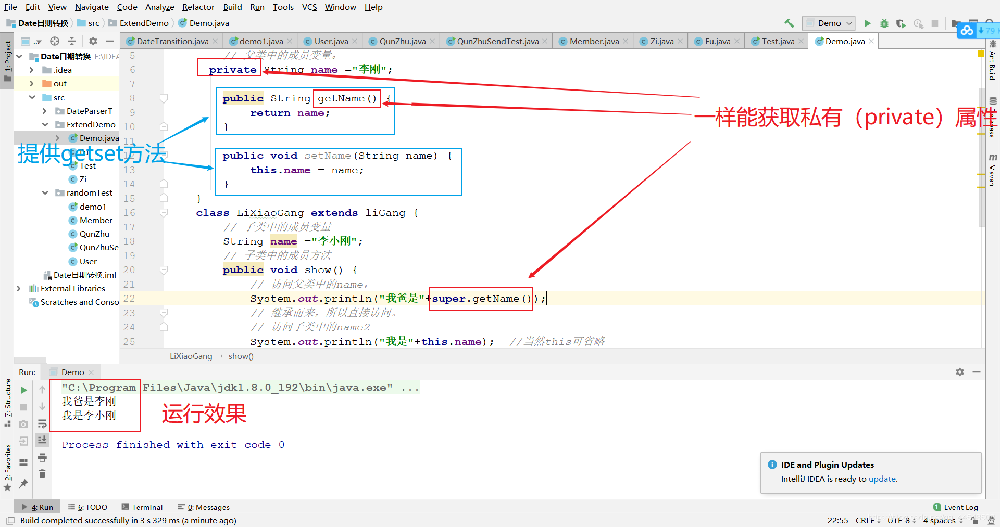
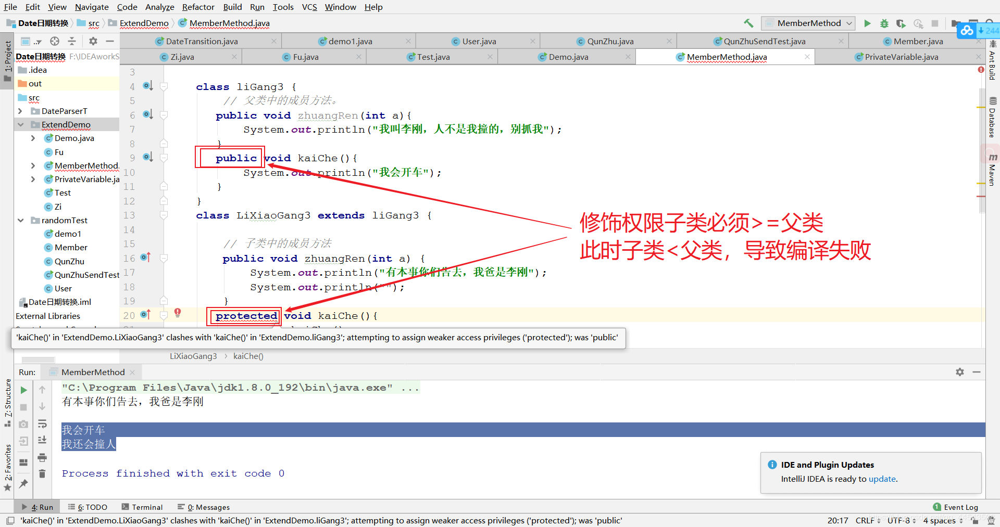
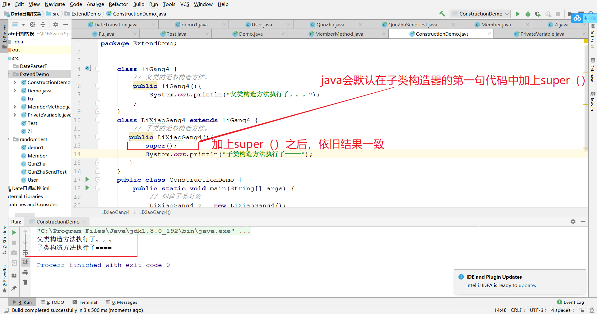
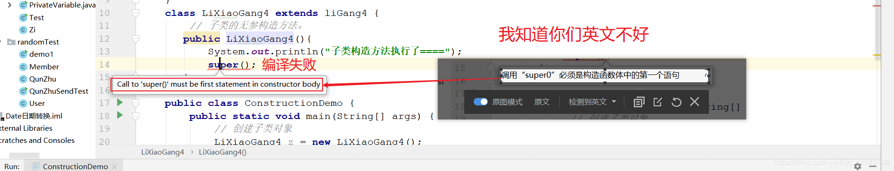

原文连接:https://www.cnblogs.com/yichunguo/p/11875343.html
目录
前言
本文主要多方面讲解java继承，旨在让初学者通俗易懂，至于“我爸是李刚”，反正楼主也不知道谁爸是李刚。
@
1、继承的概述
1.1、继承的由来
至于由来简单一句话：多个类中存在相同属性和行为时，将这些内容抽取到单独一个类中，那么多个类无需再定义这些属性和行为。
继承描述的是事物之间的所属关系，这种关系是 is-a 的关系。
1.2、继承的定义
继承：就是子类继承父类的属性和行为，使得子类对象具有与父类相同的属性、相同的行为。子类可以直接访问父类中的非私有的属性和行为。
这里再声明一点，父类又称为超类或者基类。而子类又称为派生类这点很基础！
1.3、继承的优点
- 提高代码的复用性。
- 类与类之间产生关系，为多态做了完美的铺垫（不理解没关系，之后我会再写一篇多态的文章）
虽然继承的优点很多但是Java只支持单继承，不支持多继承。
1.4、继承的格式
通过 extends 关键字，可以声明一个子类继承另外一个父类，定义格式如下：
class 父类 {
...
}
class 子类 extends 父类 {
...
} 2、关于继承之后的成员变量
当类之间产生了关系后，其中各类中的成员变量，产生了哪些影响呢？ 关于继承之后的成员变量要从两方面下手，一是成员变量不重名方面，二是成员变量重名方面。
2.1、成员变量不重名
如果子类父类中出现不重名的成员变量，这时的访问是没有影响的。代码如下：
class liGang {
// 父类中的成员变量。
String name ="李刚";//------------------------------父类成员变量是name
}
class LiXiaoGang extends liGang {
// 子类中的成员变量
String name2 ="李小刚";//--------------------------子类成员变量是name2
// 子类中的成员方法
public void show() {
// 访问父类中的name，
System.out.println("我爸是"+name);
// 继承而来，所以直接访问。
// 访问子类中的name2
System.out.println("我是"+name2);
}
}
public class Demo {
public static void main(String[] args) {
// 创建子类对象
LiXiaoGang z = new LiXiaoGang();
// 调用子类中的show方法
z.show();
}
}
//演示结果： 我爸是李刚 我是李小刚2.2、 成员变量重名
如果子类父类中出现重名的成员变量，这时的访问是有影响的。代码如下：
class liGang {
// 父类中的成员变量。
String name ="李刚";//------------------------------父类成员变量是name
}
class LiXiaoGang extends liGang {
// 子类中的成员变量
String name ="李小刚";//---------------------------子类成员变量也是name
// 子类中的成员方法
public void show() {
// 访问父类中的name，
System.out.println("我爸是"+name);
// 继承而来，所以直接访问。
// 访问子类中的name2
System.out.println("我是"+name);
}
}
public class Demo {
public static void main(String[] args) {
// 创建子类对象
LiXiaoGang z = new LiXiaoGang();
// 调用子类中的show方法
z.show();
}
}
//演示结果： 我爸是李小刚 我是李小刚
子父类中出现了同名的成员变量时，在子类中需要访问父类中非私有成员变量时，需要使用 super 关键字，至于修饰父类成员变量，类似于之前学过的 this 。 使用格式 super.父类成员变量名
this表示当前对象，super则表示父类对象，用法类似！
class liGang {
// 父类中的成员变量。
String name ="李刚";
}
class LiXiaoGang extends liGang {
// 子类中的成员变量
String name ="李小刚";
// 子类中的成员方法
public void show() {
// 访问父类中的name，
System.out.println("我爸是"+super.name);
// 继承而来，所以直接访问。
// 访问子类中的name2
System.out.println("我是"+this.name); //当然this可省略
}
}
public class Demo {
public static void main(String[] args) {
// 创建子类对象
LiXiaoGang z = new LiXiaoGang();
// 调用子类中的show方法
z.show();
}
}
//演示结果： 我爸是李刚 我是李小刚2.3、关于继承中成员变量值得思考的一个问题
同学你有没有想过这样一个问题。如果父类中的成员变量
非私有：子类中可以直接访问。
私有：子类是不能直接访问的。如下：

当然，同学你要自己体验体验编译报错过程，看图没体验感不得劲，~呕，你这无处安放的魅力，无理的要求，我佛了，行吧~
class liGang2 {
// 父类中的成员变量。
private String name ="李刚";
}
class LiXiaoGang2 extends liGang2 {
// 子类中的成员变量
String name ="李小刚";
// 子类中的成员方法
public void show() {
// 访问父类中的name，
System.out.println("我爸是"+super.name);//------编译失败不能直接访问父类私有属性（成员变量）
// 继承而来，所以直接访问。
// 访问子类中的name2
System.out.println("我是"+this.name); //当然this可省略
}
}
public class PrivateVariable {
public static void main(String[] args) {
// 创建子类对象
ExtendDemo.LiXiaoGang z = new ExtendDemo.LiXiaoGang();
// 调用子类中的show方法
z.show();
}
}通常开发中编码时，我们遵循封装的原则，使用private修饰成员变量，那么如何访问父类的私有成员变量呢？其实这个时候在父类中提供公共的getXxx方法和setXxx方法就可以了。代码如下：
class liGang {
// 父类中的成员变量。
private String name ="李刚";
public String getName() {
return name;
}
public void setName(String name) {
this.name = name;
}
}
class LiXiaoGang extends liGang {
// 子类中的成员变量
String name ="李小刚";
// 子类中的成员方法
public void show() {
// 访问父类中的name，
System.out.println("我爸是"+super.getName());
// 继承而来，所以直接访问。
// 访问子类中的name2
System.out.println("我是"+this.name); //当然this可省略
}
}
public class Demo {
public static void main(String[] args) {
// 创建子类对象
LiXiaoGang z = new LiXiaoGang();
// 调用子类中的show方法
z.show();
}
}
//演示结果： 我爸是李刚 我是李小刚分析如下：
3、关于继承之后的成员方法
分析完了成员变量，现在我们一起来分析分析成员方法。
想一想，当类之间产生了关系，其中各类中的成员方法，又产生了哪些影响呢？ 同样我们依旧从两方面分析。
#### 3.1、成员方法不重名
如果子类父类中出现不重名的成员方法，这时的调用是没有影响的。对象调用方法时，会先在子类中查找有没有对 应的方法，若子类中存在就会执行子类中的方法，若子类中不存在就会执行父类中相应的方法。代码如下：
class liGang3 {
// 父类中的成员方法。
public void zhuangRen1(){//--------------------------父类方法名zhuangRen1
System.out.println("我叫李刚，人不是我撞的，别抓我，我不认识李小刚");
}
}
class LiXiaoGang3 extends liGang3 {
// 子类中的成员方法
public void zhuangRen() {//--------------------------子类方法名zhuangRen
System.out.println("有本事你们告去，我爸是李刚");
}
}
public class MemberMethod {
public static void main(String[] args) {
// 创建子类对象
LiXiaoGang3 liXiaoGang = new LiXiaoGang3();
// 调用子类中的show方法
liXiaoGang.zhuangRen();
liXiaoGang.zhuangRen1();
}
}
打印结果：有本事你们告去，我爸是李刚
我叫李刚，人不是我撞的，别抓我，我不认识李小刚
#### 3.2、成员方法重名 【方法重写】
成员方法重名大体也可以分两种情况：
1、方法名相同返回值类型、参数列表却不相同（优先在子类查找，没找到就去父类）
2、方法名、返回值类型、参数列表都相同，没错这就是重写(Override)
这里主要讲方法重写 ：子类中出现与父类一模一样的方法时（返回值类型，方法名和参数列表都相同），会出现覆盖效果，也称为重写或者复写。声明不变，重新实现。 代码如下：
class liGang3 {
// 父类中的成员方法。
public void zhuangRen(int a){
System.out.println("我叫李刚，人不是我撞的，别抓我");
}
}
class LiXiaoGang3 extends liGang3 {
// 子类中的成员方法
public void zhuangRen(int a) {
System.out.println("有本事你们告去，我爸是李刚");
}
}
public class MemberMethod {
public static void main(String[] args) {
// 创建子类对象
LiXiaoGang3 liXiaoGang = new LiXiaoGang3();
// 调用子类中的zhuangRen方法
liXiaoGang.zhuangRen(1);
}
}
结果打印：有本事你们告去，我爸是李刚#### 3.3、继承中重写方法的意义
子类可以根据需要，定义特定于自己的行为。既沿袭了父类的功能名称，又根据子类的需要重新实现父类方法，从而进行扩展增强。比如李刚会开车，李小刚就牛了，在父类中进行扩展增强还会开车撞人，代码如下：
class liGang3 {
// 父类中的成员方法。
public void kaiChe(){
System.out.println("我会开车");
}
}
class LiXiaoGang3 extends liGang3 {
// 子类中的成员方法
public void kaiChe(){
super.kaiChe();
System.out.println("我还会撞人");
System.out.println("我还能一撞撞俩婆娘");
}
}
public class MemberMethod {
public static void main(String[] args) {
// 创建子类对象
LiXiaoGang3 liXiaoGang = new LiXiaoGang3();
// 调用子类中的zhuangRen方法
liXiaoGang.kaiChe();
打印结果： 我会开车
我还会撞人
我还能一撞撞俩婆娘
}
}
不知道同学们发现了没有，以上代码中在子类中使用了 super.kaiChe()；super.父类成员方法，表示调用父类的成员方法。
最后重写必须注意这几点：
1、方法重写时， 方法名与形参列表必须一致。
2、子类方法覆盖父类方法时，必须要保证子类权限>=父类权限。
3、方法重写时，子类的返回值类型必须要<=父类的返回值类型。
4、方法重写时，子类抛出的异常类型要<=父类抛出的异常类型。
粗心的同学看黑板，look 这里【注意：只有访问权限是
>=，返回值、异常类型都是<=】
下面以修饰权限为例，如下：

4、关于继承之后的构造方法
为了让你更好的体会，首先我先编写一个程序
class liGang4 {
// 父类的无参构造方法。
public liGang4(){
System.out.println("父类构造方法执行了。。。");
}
}
class LiXiaoGang4 extends liGang4 {
// 子类的无参构造方法。
public LiXiaoGang4(){
System.out.println("子类构造方法执行了====");
}
}
public class ConstructionDemo {
public static void main(String[] args) {
// 创建子类对象
LiXiaoGang4 z = new LiXiaoGang4();
}
}用一分钟猜想一下结果是什么，猜好了再看下面结果：
父类构造方法执行了。。。
子类构造方法执行了====好了，看了结果之后，你可能有疑惑。父类构造器方法怎么执行了？我们先来分析分析，首先在main方法中实例化了子类对象，接着会去执行子类的默认构造器初始化，这个时候在构造方法中默认会在第一句代码中添加super();没错，他就是开挂般的存在，不写也存在的！有的调~读四声“跳”~皮的同学就会说，你说存在就存在啊，无凭无据 ~呀，你这个该死的靓仔~ 如下：

构造方法的名字是与类名一致的，所以子类是无法继承父类构造方法的。 构造方法的作用是初始化成员变量的。所以子类的初始化过程中，必须先执行父类的初始化动作。子类的构造方法中默认会在第一句代码中添加super()，表示调用父类的构造方法，父类成员变量初始化后，才可以给子类使用。
当然我已经强调很多遍了 super() 不写也默认存在，而且只能是在第一句代码中,不在第一句代码中行不行，答案是当然不行，这样会编译失败，如下：

5、关于继承的多态性支持的例子
直接上代码了喔
class A{
public String show(C obj) {
return ("A and C");
}
public String show(A obj) {
return ("A and A");
}
}
class B extends A{
public String show(B obj) {
return ("B and B");
}
}
class C extends B{
public String show(A obj) {
return ("A and B");
}
}
public class Demo1 {
public static void main(String[] args) {
A a=new A();
B b=new B();
C c=new C();
System.out.println("第一题 " + a.show(a));
System.out.println("第二题 " + a.show(b));
System.out.println("第三题 " + a.show(c));
}
}
运行结果：
第一题 A and A
第二题 A and A
第三题 A and C其实吧，第一题和第三题都好理解，第二题就有点意思了，会发现A类中没有B类型这个参数，这个时候，你就应该知道子类继承就是父类，换句话说就是子类天然就是父类，比如中国人肯定是人，但是人不一定是中国人（可能是火星人也可能是非洲人），所以父类做为参数类型，直接传子类的参数进去是可以的，反过来，子类做为参数类型，传父类的参数进去，就需要强制类型转换。
6、super与this的用法
了解他们的用法之前必须明确一点的是父类空间优先于子类对象产生
在每次创建子类对象时，先初始化父类空间，再创建其子类对象本身。目的在于子类对象中包含了其对应的父类空间，便可以包含其父类的成员，如果父类成员非private修饰，则子类可以随意使用父类成员。代码体现在子类的构 造方法调用时，一定先调用父类的构造方法。理解图解如下：

#### 5.1、 super和this的含义：
super：代表父类的存储空间标识(可以理解为父亲的引用)。
this：代表当前对象的引用(谁调用就代表谁)。
#### 5.2、 super和this访问成员
this.成员变量 ‐‐ 本类的
super.成员变量 ‐‐ 父类的
this.成员方法名() ‐‐ 本类的
super.成员方法名() ‐‐ 父类的
#### 5.3、super和this访问构造方法
this(...)‐‐ 本类的构造方法
super(...)‐‐ 父类的构造方法#### 5.4、super()和this()能不能同时使用?
不能同时使用，this和super不能同时出现在一个构造函数里面，因为this必然会调用其它的构造函数，其它的构造函数必然也会有super语句的存在，所以在同一个构造函数里面有相同的语句，就失去了语句的意义，编译器也不会通过。
#### 5.5、总结一下super与this
子类的每个构造方法中均有默认的
super()，调用父类的空参构造。手动调用父类构造会覆盖默认的super()。super()和this()都必须是在构造方法的第一行，所以不能同时出现。
到这里，java继承你get到了咩，get到了请咩一声，随便随手~点个赞呗~
推荐阅读本专栏的下一篇java文章
【java基础之多态】理解多态的向上向下转型从“妈妈我想吃烤山药”讲起
欢迎各位关注我的公众号，一起探讨技术，向往技术，追求技术...